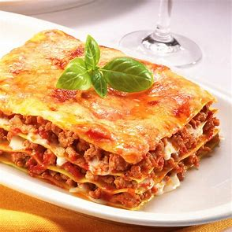

Italian Lasagna

Italian Lasagna is a
classic and beloved dish that embodies
the heartiness and comfort of Italian cuisine.
Layered with tender lasagna noodles, rich tomato
sauce, creamy béchamel sauce, and a generous filling
of seasoned ground meat, such as beef or Italian sausage,
it is a true delight for the taste buds
Ingredients
- Lean Ground Beef
- Egg (beaten)
- Part-Skim Ricotta Cheese
- Fresh Parsley (chopped)
- KRAFT Shredded Low-Moisture Part-Skim Mozzarella Cheese (divided)
- KRAFT Grated Parmesan Cheese (divided)
- CLASSICO Tomato And Basil Pasta Sauce
- Water
- Lasagna Noodles (uncooked)
- Heat oven to 350°F.
- Brown meat in large skillet on medium-high heat. Meanwhile, combine egg, ricotta, parsley,
1-1/4 cups mozzarella and 1/4 cup Parmesan.
- Drain meat; return to skillet. Stir in pasta sauce.
Add 1 cup water to empty sauce jar; cover with lid and shake well.
Add to meat mixture; stir until blended.
- Spread 1 cup meat sauce onto bottom of 13x9-inch baking dish sprayed
with cooking spray; top with layers of 3 lasagna noodles,
1/3 of the ricotta mixture and 1 cup of the remaining meat sauce.
Repeat layers twice. Top with remaining noodles, meat sauce and cheeses.
Cover with foil sprayed with cooking spray.
- Bake 1 hour or until heated through, removing foil after 45 min.
Let stand 15 min.
before cutting to serve.